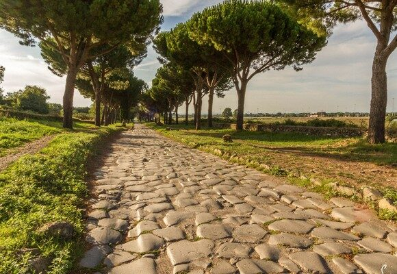
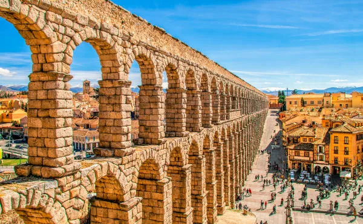
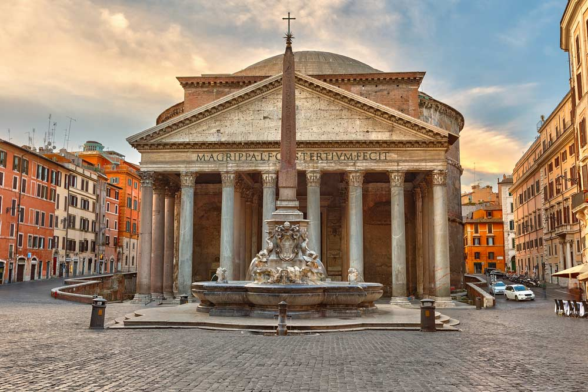
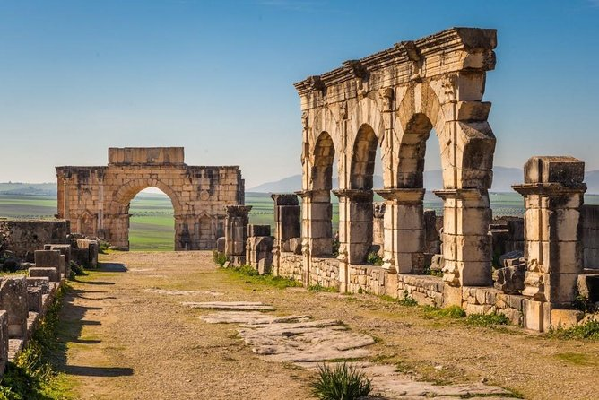
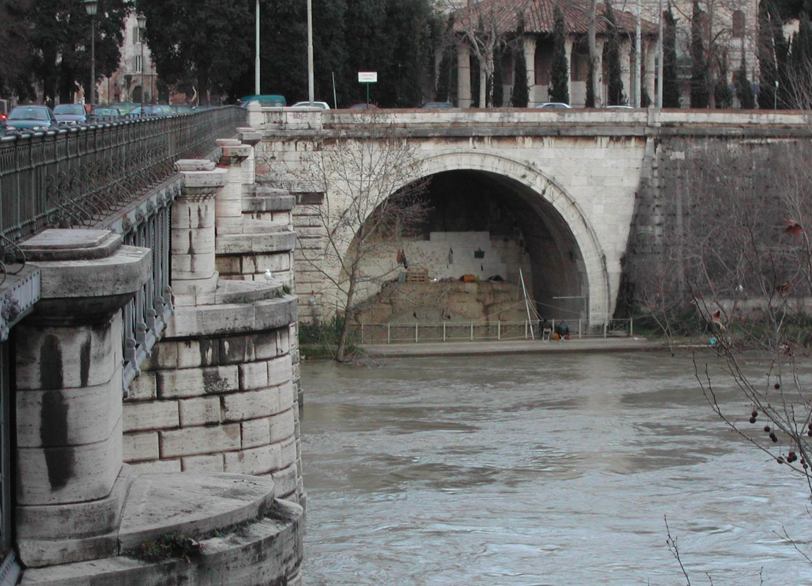

Tecnologia a serviço do Império
Os romanos desenvolveram e aperfeiçoaram diversas técnicas de engenharia e construção. Muitas delas foram utilizadas para resolver problemas práticos, como o abastecimento de água, o transporte de pessoas e mercadorias e a construção de cidades.
Estradas, aquedutos, pontes, portos e sistemas de saneamento contribuíram para conectar diferentes regiões e facilitar a circulação dentro do território romano.
PRINCIPAIS TECNOLOGIAS
Construções que marcaram Roma

ESTRADAS
Uma extensa rede de estradas ligava cidades, regiões e áreas militares. Elas facilitavam o deslocamento de tropas, pessoas e mercadorias.
SAIBA MAIS
As estradas romanas eram construídas com diferentes camadas de materiais, criando caminhos resistentes e duradouros. Algumas delas continuaram sendo utilizadas durante séculos.

AQUEDUTOS
Os aquedutos transportavam água de fontes até cidades e centros urbanos, abastecendo fontes, termas e outros espaços.
SAIBA MAIS
Muitos aquedutos utilizavam canais construídos com uma pequena inclinação para permitir que a água fluísse por gravidade até seu destino.

CONCRETO ROMANO
Os romanos desenvolveram técnicas de construção utilizando materiais que permitiram criar estruturas resistentes e de grande porte.
SAIBA MAIS
O uso de materiais como a cal e a pozolana possibilitou a construção de estruturas como portos, cúpulas, edifícios e fundações.

PONTES
Pontes permitiam atravessar rios e outros obstáculos, mantendo as rotas de circulação entre diferentes regiões do território.
SAIBA MAIS
A utilização de arcos foi importante na construção de muitas pontes romanas, distribuindo o peso da estrutura e aumentando sua resistência.

PORTOS
Os portos eram fundamentais para o comércio, permitindo a chegada e a saída de navios e mercadorias de diferentes regiões.
SAIBA MAIS
Grandes portos, como o de Óstia, estavam ligados ao abastecimento de Roma e recebiam produtos transportados pelo Mediterrâneo.

SANEAMENTO
Sistemas de drenagem e estruturas como a Cloaca Máxima ajudaram a controlar a água e os resíduos em áreas urbanas.
SAIBA MAIS
O saneamento fazia parte da infraestrutura urbana romana e estava relacionado ao funcionamento das cidades.
Uma rede que conectava o Império
A tecnologia romana não estava isolada. Estradas, pontes, portos e aquedutos faziam parte de uma infraestrutura que ajudava a conectar diferentes regiões.
Essa estrutura facilitava a circulação de pessoas, tropas, mercadorias e informações, contribuindo para o funcionamento das cidades e das atividades econômicas.